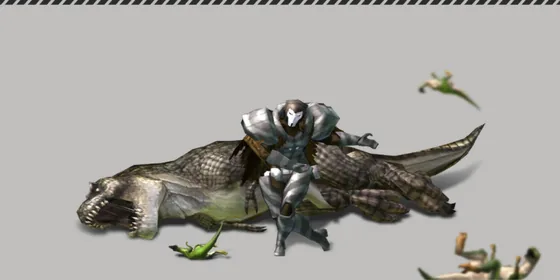

Home › Progression
 Skills and Careers Live
Skills and Careers Live
Character level, skill categories, skill points, Skill Rewind, the career you pick at character creation, and the Career Guide
Some sections on this page are not ready yet
Your character grows in two ways. Character level goes up from everything you do. Skill categories are separate tracks, and each one only grows from its own kind of work. Character levels give you Skill Points to learn skills. A skill category's level decides which skill ranks you are allowed to learn.

What you can do
- Gather, craft, build, hunt and tame to earn character EXP and skill category EXP
- Spend Skill Points on new skills. Skills give crafting recipes, combat actions and stat bonuses
- Use Skill Rewind to get points back and learn a different line
- Pick a career when you create your character. It starts one category at Lv.20 and gives starting items
- Finish courses in the Career Guide for item rewards and a title
Character level and EXP Live
- The maximum character level is 60
- Doing things at your own level takes about 40 actions (weight 1) per level, at any level
- EXP also depends on the level of what you do. Lower-level work gives less; higher-level work gives a little more
- A great success gives ×1.5
- Eating, drinking, washing and resting give no EXP
| Action | Weight (higher = more EXP) |
|---|---|
| Gathering · planting and harvesting | 1 |
| Crafting · butchering · dodging an attack · discovering a new spot | 2 |
| Building · hunting · capturing/taming | 3 |
The level multiplier is (10 + 2 × level of the thing) ÷ (10 + 2 × your level), at least ×0.1 and at most ×1.5. Example: a Lv.30 character gathering a Lv.10 resource gets about ×0.43.
Every character level-up gives +5 Skill Points, +4 max health and +1.5 max energy. Levels 2, 5 and 10 also give a level title.
Extra EXP from worn items Live
Some worn items have an Acquired EXP stat — character EXP from actions × (1 + that value), multiplied together with the Delicious status · the total multiplier stays between ×0.1 and ×10
- e.g. Somebody's Apple (accessory) +200% EXP → ×3 (×3.09 with Delicious)
- It does not multiply skill category EXP or quest reward EXP
Skill categories Live
There are 12 categories you can train. Each goes from Lv.1 to 60 and cannot go above your character level. Once a category catches up with your character level, its EXP bar stays full until your character levels up.
| Category | Earns EXP from |
|---|---|
| Survival | Capturing/taming animals · discovering new spots or new animal species |
| Melee | Hunting with melee weapons |
| Ranged | Hunting with ranged weapons |
| Defense | Dodging attacks · taking hits |
| Butchering | Butchering carcasses |
| Gathering | Gathering plants, wood, stone and ore (Gathering) |
| Cooking · Weapon/Tool · Tailoring · Processing | Crafting recipes of that category (Crafting) |
| Construction | Building structures (Building) |
| Farming | Planting seeds · harvesting (Farming) |
Skill category EXP Live
Category EXP per action depends on the level of what you do compared with the category level:
| Level of the thing vs. category level | Category EXP per action |
|---|---|
| Same or higher | 3 |
| 1–5 levels lower | 2 |
| 6–15 levels lower | 1 |
| More than 15 levels lower | 0 |
- A great success gives ×1.5, but never more than 3 per action
- Hitting an animal gives EXP in proportion to damage dealt compared with the animal's health
- Spamming one category far more than normal within one hour slowly lowers the EXP, but never to zero
| Category level | EXP needed for the next level |
|---|---|
| 1–3 | 1 |
| 10 | 3 |
| 20 | 7 |
| 30 | 14 |
| 40 | 27 |
| 50 | 51 |
| 59 | 90 |
Skill Research Live
Some category levels need Research before they can go up. When the EXP bar is full at one of these levels, start Research on the skill page and wait for the timer. Every category has research steps except Survival.
| Category level | Research time |
|---|---|
| 20 | 5 minutes |
| 25 | 20 minutes |
| 30 | 1 hour |
| 35 | 2 hours |
| 40 | 4 hours |
| 45 | 12 hours |
| 50 | 24 hours |
| 55 | 48 hours |
| 59 | 72 hours |
- You can research one category at a time
- Research can only start while the category level is below your character level
- While researching, keep doing that category's work to shorten the timer (EXP × category level ÷ 10 seconds per action), up to 25% of the total time
Shorter research Live
With Academic Ambiance from a house (Buffs), research started while the buff is on takes −20% (e.g. 5 minutes → 4 minutes) · the Skill page shows the shortened time before you start · reductions add up to at most 90%
Skill Points Live
Total Skill Points = 10 + (character level − 1) × 5
| Character level | Total Skill Points |
|---|---|
| 1 | 10 |
| 10 | 55 |
| 20 | 105 |
| 40 | 205 |
| 60 | 305 |
- Skill ranks cost different amounts. Some ranks cost 0 points and are learned automatically once the category level is reached
- Ranks must be learned in order, and the category level must meet the rank's requirement
- A sub-skill needs its main skill first
Skills that raise your stats Live
The bonuses from these skills really take effect in game (added to worn items, food, titles and houses), and the numbers on the stats window match what the server uses
| Skill | Effect when complete | Read more |
|---|---|---|
| Health I–VI | +250 Max Health | Survival |
| Bulk Up | +10 Max Energy per step | 〃 |
| Life Recovery I–VI · Stamina Recovery I–VI | +1 / +2.5 per second | 〃 |
| Stealth I–VI | +24 Stealth Ability | Wild animals |
| Exploration I–III | Search button waits 9 / 8 / 7 seconds | Map |
| Capture skills (10 steps) | +55 Capture Ability | Taming |
| Animal Handling I–IV | Own up to 10 / 12 / 14 / 16 animals | Pets |
For combat stats (defense, attack, dodge, combat speed) see Character stats
Learning and Skill Rewind Live
Learn: open the Skill page, choose a category and learn the next rank. Your character must be alive.
Skill Rewind: removes one rank at a time, starting from the top rank, and refunds the points right away. A main skill cannot be removed while any of its sub-skills are still learned.
| Rewind number that day | Cost |
|---|---|
| 1–5 | Free |
| 6–15 | 1 Skill Rewind Voucher (if you have one), otherwise 30 T-Stones |
| Over 15 | Not possible until the reset |
The quota resets every day at 22:00 Thai time (UTC+7), which is 15:00 UTC.
Careers Live
You pick a career when you create your character. A career gives three things:
- One category starts at Lv.20
- 1–5 starting skill ranks in that category
- Starting items, one piece per line, at the level shown
| Career | Category at Lv.20 | Starting items | Points used by starting skills |
|---|---|---|---|
| Soldier | Melee | Ruined Tag Lv.10 · Survival Food · Modern Banknote ×2 | 3 |
| Job Seeker | Defense | Ruined Keyboard Lv.10 · Modern Banknote ×2 | 2 |
| Office Worker | Construction | Ruined Modern Hammer Lv.10 · Blue Bull Lv.20 · Modern Banknote ×3 | 6 |
| Engineer | Weapon/Tool | Ruined Folding Chair Lv.10 · Rope Lv.20 ×2 · Modern Banknote ×2 | 8 |
| Attendant | Tailoring | Ruined Modern Needle Lv.20 · Thread Lv.20 ×2 · Modern Banknote ×2 | 10 |
| Farmer | Farming | Ruined Modern Hoe Lv.10 · Ruined Bucket Lv.10 · Corn Seed · Modern Banknote ×2 | 7 |
| Chubu (homemaker) | Cooking | Ruined Bucket Lv.10 · Ramen · Modern Banknote ×2 | 5 |
| Student | Gathering | Ruined Baseball Bat Lv.10 · Modern Banknote ×2 | 7 |
Starting skills count as points already spent. For example, an Attendant starts the game with 10 of 10 points used.
Career Guide Live
The Career Guide button is on the skill page. It holds 58 courses, grouped by line and by difficulty 1–4. Each course is a list of skills to learn.
- Pick a course as your target
- Learn the listed skills until the course reaches 100%
- Claim the reward: items plus the course's title
| Line | Courses |
|---|---|
| Combat | 13 |
| Weapon Crafting | 13 |
| Tailoring | 8 |
| Cooking | 8 |
| Construction | 6 |
| Gathering | 6 |
| Farming | 4 |
| Difficulty | Courses | Skill Points needed |
|---|---|---|
| 1 | 7 | 17–31 |
| 2 | 13 | 27–71 |
| 3 | 19 | 44–157 |
| 4 | 19 | 104–264 |
At Lv.60 (305 points) you can finish any course, even the most expensive one (264).
Not finished yet Not ready
- Extra EXP for boss or herd-leader animals is not in yet. They give the same EXP as a normal animal of the same level.